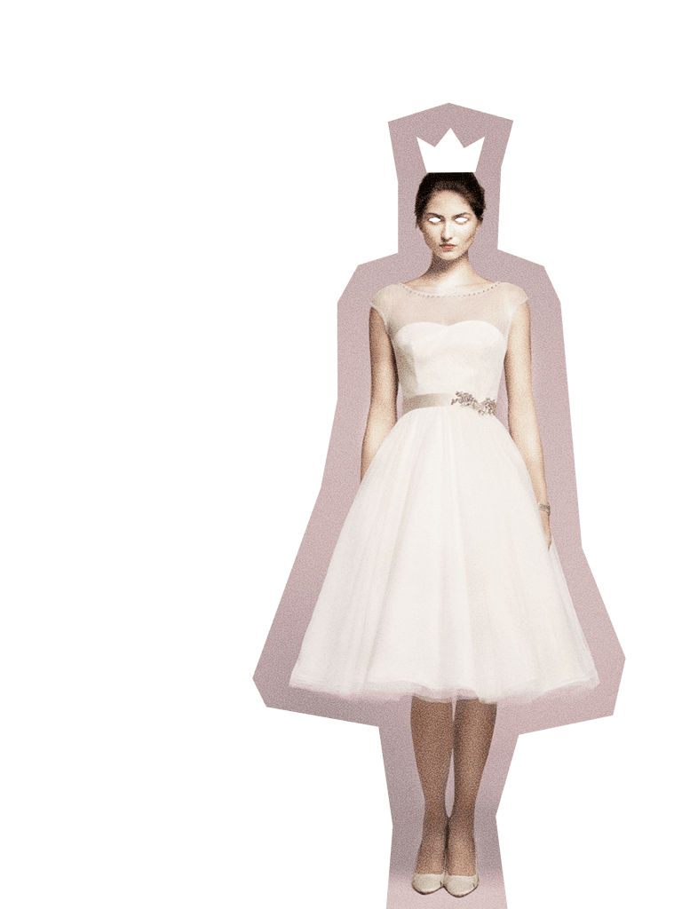

Grimm / cross-culture factoids. Grimm / cross-culture factoids. Grimm / cross-culture factoids. Grimm / cross-culture factoids. Grimm / cross-culture factoids. Grimm / cross-culture factoids. Grimm / cross-culture factoids. Grimm / cross-culture factoids.
We echo our parents’ mistakes.
What have we learned? Vanity is bad, but beauty is good? Revenge is acceptable? The bad guy lost, but there was no real good guy to win.